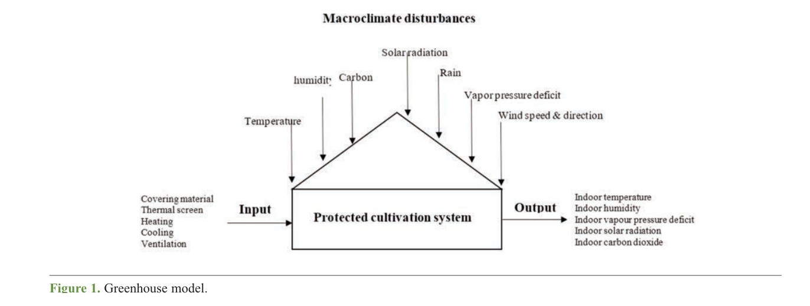
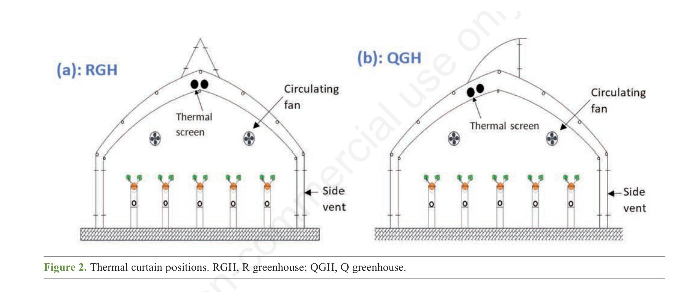
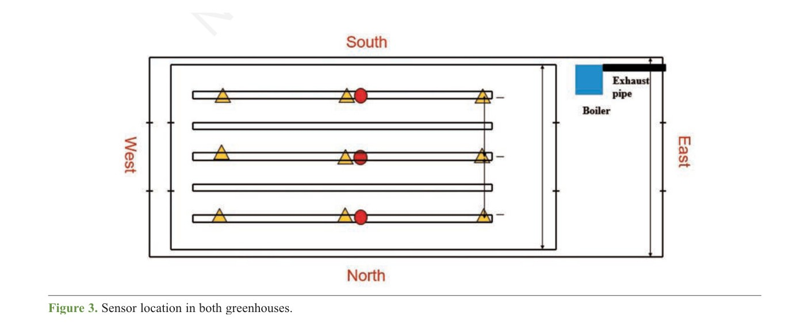
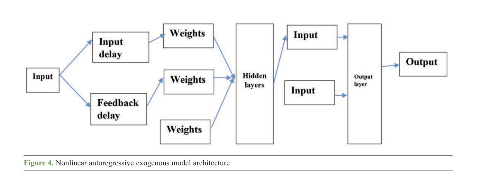
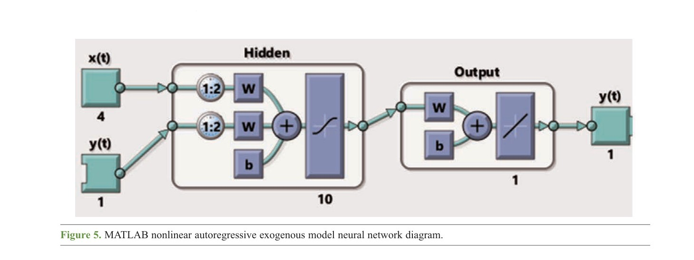
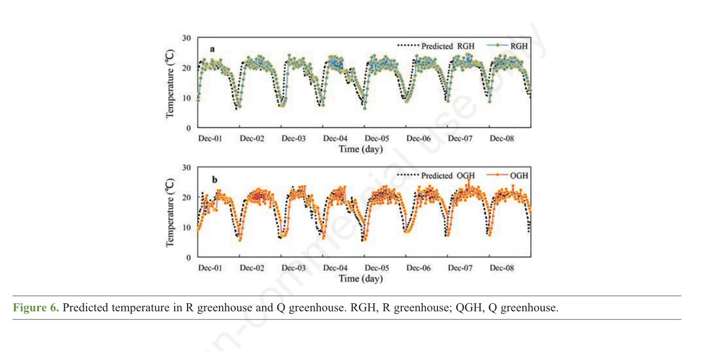
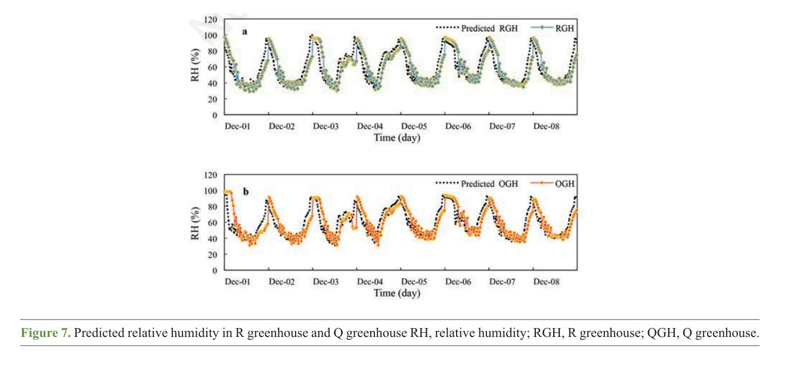

🏡 NARX Modeling of Two Greenhouses with Different Thermal Curtains
Timothy Denen Akpenpuun, Qazeem Opeyemi Ogunlowo, Wook-Ho Na, Prabhat Dutta, Anis Rabiu, Misbaudeen Aderemi Adesanya, Mohammadreza Narimani, Ezatullah Zakir, Hyeon Tae Kim, and Hyun-Woo Lee*
Journal of Agricultural Engineering · Volume LV · Article 1563 · 2024 · Open access CC BY-NC 4.0
Kyungpook National University · University of Ilorin · University of Tehran · Gyeongsang National University
Why the Curtain Position Matters
Protected cultivation depends on stable temperature, humidity, and vapor-pressure deficit (VPD). Thermal curtains change energy balance and airflow, so two adjacent houses with different curtain strategies can diverge even under similar outdoor weather—critical for strawberry and other high-value greenhouse crops.
For queries on greenhouse NARX modeling, thermal curtain microclimate, or VPD neural network greenhouse, this page summarizes Journal of Agricultural Engineering research coauthored by Mohammadreza Narimani, showing dynamic NARX networks that track temperature and humidity pathways and reach very high VPD skill (R² up to 99.1% in the published results).
Protected cultivation decouples crop climate from the outdoor macroclimate, but heating, ventilation, and screens interact as a nonlinear, time-lagged system. This study models two adjacent single-span strawberry greenhouses that differ only in thermal-curtain position: screens in the R greenhouse (RGH) hang in the roof space; screens in the Q greenhouse (QGH) follow a different hang geometry.
Mohammadreza Narimani contributed to methodology with colleagues at Kyungpook National University and partner labs. MATLAB NARX (nonlinear autoregressive with exogenous inputs) networks, trained with Levenberg–Marquardt backpropagation on normalized 10-minute sensor streams, predict indoor air temperature, relative humidity, vapor pressure deficit, and yield.





Predicted Microclimate
Inputs included indoor air temperature, RH, VPD, inner-roof temperature and humidity, solar radiation, and outdoor temperature. Models were scored with R², MSE, RMSE, mean absolute deviation, and Nash–Sutcliffe efficiency. Predicted RGH means were about 20.1 °C, 50% RH, and 1.31 kPa VPD; QGH was slightly cooler and more humid. ANOVA found a significant VPD difference between houses at 5%.


The authors emphasize VPD for control because NSE approached 1.00 for that target and because QGH spent more time in the agronomically preferred VPD band. The NARX VPD model reached R² of 99.1%, 98.7%, and 98.6% in RGH on 70:15:15 splits. Adjacent houses with different curtain geometry are therefore not interchangeable climate systems—even under the same outdoor weather.
Dynamic memory
NARX keeps lagged indoor states, which static regressions miss in greenhouse time series.
Curtain contrast
The only intended structural difference is screen geometry, isolating that design choice.
Control-ready VPD
High VPD fidelity supports using the model as a setpoint predictor, not only a hindcast.
Paper and Citation
Akpenpuun, T. D., Ogunlowo, Q. O., Na, W. H., Dutta, P., Rabiu, A., Adesanya, M. A., … & Lee, H. W. (2024). Dynamic neural network modeling of thermal environments of two adjacent single-span greenhouses with different thermal curtain positions. Journal of Agricultural Engineering, 55(2), 1563.
DOI: 10.4081/jae.2024.1563 · Open access under CC BY-NC 4.0
Please cite the publisher version when you use this work. The summary on this page is a research card, not a substitute for the article.
Contact
Mohammadreza Narimani
PhD Candidate, University of California, Davis